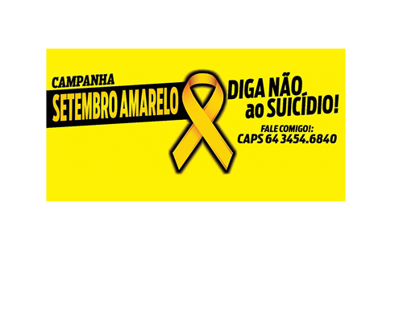

Voltar
QUEM SOMOS?
Somos 3 jovens estudantes do curso tecnico Desenvolvimento de Sistemas (turma 61318) do Senai Dendezeiros(BA), participando de um trabalho que consiste no desenvolvimento de um site de utilidade publica/social. No qual escolhemos um assunto muito serio e persistente na sociedade contemporânea, esperamos ajudar alguem que esteja passando por essa fase ou ate alguem que conheça uma pessoa que possua depressão. Email pra contato: Winitpi@hotmail.com (outros email's).
CURIOSIDADE!!!!
Como pode-se perceber a cor dos titulos de todas as paginas são da cor amarela, fazendo total alusão a campanha setembro amarelo que é uma campanha brasileira de prevenção ao suicídio, iniciada em 2015. É uma iniciativa do Centro de Valorização da Vida (CVV), do Conselho Federal de Medicina (CFM) e da Associação Brasileira de Psiquiatria (ABP). O mês de setembro foi escolhido para a campanha porque, desde 2003, o dia 10 de setembro é o Dia Mundial de Prevenção do Suicídio, por iniciativa da International Association for Suicide Prevention.A ideia é promover eventos que abram espaço para debates sobre suicídio e divulgar o tema alertando a população sobre a importância de sua discussão.
